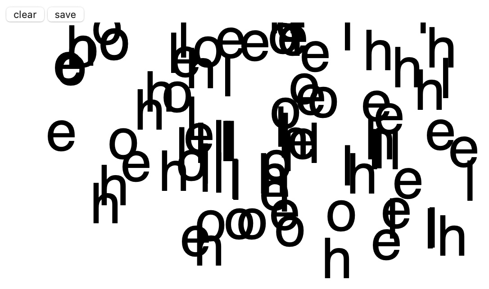
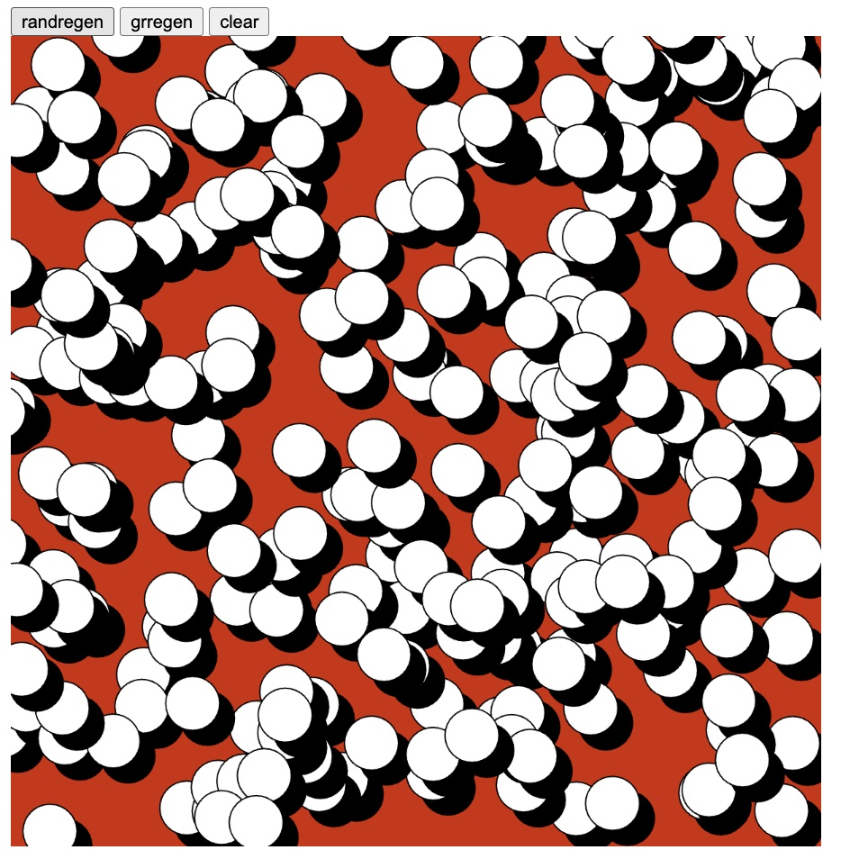
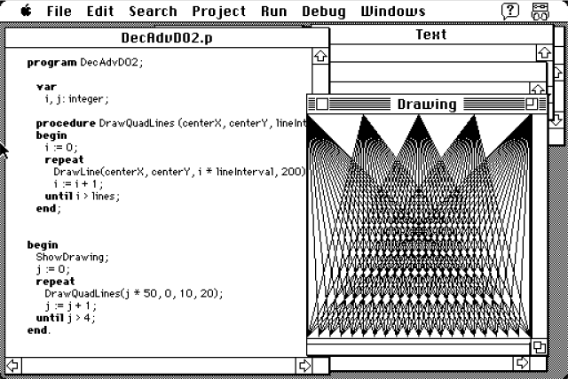

ngl i've been enjoying playing with p5js circles
have fun: textpainter
Started playing with p5js (The follow up to the old java based Processing).
Wanted to play with p5 for a long time but i always held myself from using because of weird ego issues like:
"javascript is a bad language i shouldn't use it"
"using a library is a crutch, a real coder should built it from scratch"
...etc
thesea re weird impostor syndrom ego issues that I often face, but part of my December adventure metal goals is to fight this stupid urge to prove to some some imaginary panel of judges how amazing I am at coding and focus more on just "DOING" stuff.
The code is not important. the result is important. stop worrying about how to make something AND JUST MAKE IT!
Here is the result of the p5 adventure: circlepop
I will be updating it with more features in upcoming adventure days as well as doing other p5js experiments when not doing pascal scripts
screenshot:
I wrote a poem today. I never wrote a Poem before. Felt inspired to write something down, grabbed a pen and paper and wrote it very naturally just flowed out without any resistance. very happy with it.
(x-x)// *zzzzzzz
Today was a difficult day, I had really bad stomach pains last night and couldn't get a good night's sleep. Work was a bust, my attention span felt like a hummingbird in a sand storm. Despite this, I managed to spend an hour exploring the past.
I decided to jump in and start playing around with TINK Pascal for the mac system OS 7. Being quite fond of minimal UI and hard black/white colorschemes (see: Pure Data) I have a special fondness for these older macintosh OSes, and i would even say that they are my favourite out of all the old OSes, design wise.
Today I learned some of the basics of the Pascal language on the macintosh and drew this nice drawing. Reminds me of the ol' Processing days.
Onwards and upwards
For day 1, I wanted to start off easy and go to a comfortable space of audiovisual exploration: Pure Data. I have long been fascinated by the rhythmic nature of waves phasing and manipulating each others without any grid or rules. A complete free form of natural waves playing with each other creating something that is more beautiful than the sum of its parts.
In this patch I explore this very concept relying on 5 sine waves dancing together and creating their own rhythm. I added a kickdrum to give a better context of the rhythm in case it wasn't evident... and also to headbang. so... enjoy.
Excited to participate in my first December Adventure.
I have developped a tendency to obsessively seek out new things to learn and disregard the tools I already know well. While this is good for advancement and improvement, the downside when not managed properly is a sense of loss, lack of purpose and an eventual burnout. At least that has been my experience.
My goal for this year is vague, but with a common underlying theme: focus on using the tools I already know, to create and share things I'm excited about. It will, however, revolve around the conception and creation of various forms of static and interactive audio/visual art.